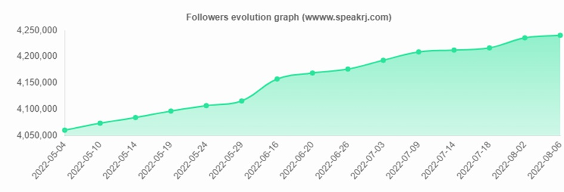

Onze missie met de contentmarketingstrategie voor Lululemon is simpel maar krachtig: een diepgaande connectie opbouwen met de gemeenschap. We willen Lululemon niet alleen neerzetten als een sportkledingmerk, maar als een supporter van een gezonde levensstijl, met yoga als centrale pijler. Ons doel is niet alleen het verkopen van kleding, maar het omarmen van een levenswijze en het inspireren van mensen om bewuste keuzes te maken voor hun welzijn.
Persona-ontwikkeling
We begrijpen onze doelgroep door te kijken naar mensen, niet alleen als klanten, maar als individuen met unieke levensstijlen en dromen. Alex, de yogaliefhebber, Sarah, de fitnessinstructeur, en Michael, de drukke professional, zijn onze personages. We passen onze content aan om elk van hen te betrekken en te inspireren, rekening houdend met hun behoeften en aspiraties.
Kernthema
"Yoga voor een gebalanceerd leven" is meer dan een slogan; het is een levenshouding die we willen delen. We benadrukken niet alleen de fysieke voordelen van yoga, maar ook de positieve impact ervan op de mentale en emotionele gezondheid. Door dit thema te weven in onze content, laten we zien hoe het harmonieert met de levensstijl van onze gemeenschap en hoe het samensmelt met de producten van Lululemon.
Distributiestrategie
Onze content verspreiden we over diverse kanalen om een brede doelgroep te bereiken. Op Instagram en YouTube delen we inspirerende yogavideo's en persoonlijke verhalen van onze gemeenschap. Op de Lululemon-blog vinden bezoekers diepgaande artikelen over gezond eten, mindfulness en praktische tips voor het omarmen van een gezonde levensstijl. Via e-mailnieuwsbrieven brengen we exclusieve aanbiedingen, praktische tips en verhalen van klanten rechtstreeks naar de gemeenschap.
Gerealiseerd Effect
Onze strategie heeft meetbare successen behaald. Sociale media laten niet alleen een groei zien in volgers en betrokkenheid, maar ook een stijging in websitebezoeken. De verkoopcijfers van Lululemon-producten tonen de impact van onze strategie op het stimuleren van betrokkenheid en uiteindelijk op de omzet. Door klanttevredenheid en community-engagement te meten, krijgen we een vollediger beeld van de bredere impact van onze inspanningen.
In totaal is deze contentmarketingstrategie voor Lululemon niet alleen gericht op het verkopen van producten, maar op het bouwen van een gemeenschap die een gezonde levensstijl omarmt. De cijfers spreken voor zich, maar het echte succes zit hem in de verhalen van mensen die geïnspireerd zijn om bewuste keuzes te maken voor hun welzijn dankzij Lululemon. Onze aanpak is niet ingewikkeld; het draait allemaal om het delen van de positieve invloed van yoga en een gezonde levensstijl, verweven met de kwaliteitsproducten van Lululemon.
